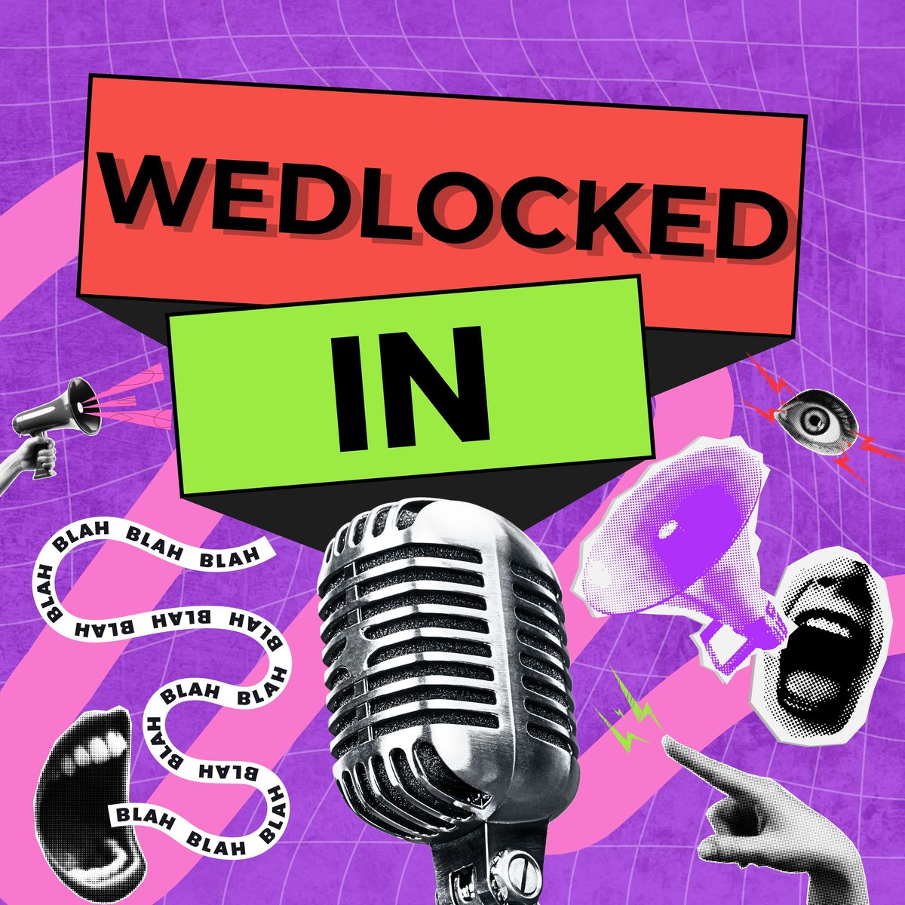

Society & Culture · Relationships
Wedlocked In
Ella and Martin read wild Reddit stories about marriage, parenting and relationships, and share their unfiltered opinions. Funny, relatable, and just the right amount of drama.
Reddit stories, unfiltered · 6 episodes · Around 80 minutes each · Hosted by Ella Samuel and Martin Pearson
Latest episode
Episode 6
CULT-urally Questionable
Some cults have more followers than others, but they're all as insane and as awful as each other, right?
Prefer your own app? Pick a platform above, or listen on Spotify or Apple Podcasts.
Episodes
All six episodes
-
6. CULT-urally Questionable
Some cults have more followers than others, but they're all as insane and as awful as each other, right?
-
5. Deceit, Served with a Side of Drama
This week it's cheaters, the worst kind of people. Cheating on your wife while she cares for her dying mother. There's a special place for that, surely.
-
4. Justified Reaction or Just Too Far?
Sending your spouse anonymous STD notifications, and shaving your head in support of a family member with cancer.
-
3. You Can't Spell Wedding Without WTF...
Interfering siblings and shaving a dog to fit an ocean-themed wedding. Some odd requests, to say the least, on this wedding-themed episode.
-
2. He's a Creep, He's a Weirdo... and He's on Reddit
Imagine finding an AI nude of your sister on your husband's phone. This week it's all about the creeps of the internet.
-
1. AITA for Not Attending My Brother & Sister's Wedding?
Not attending your brother and sister's wedding. Not telling someone they're about to sit in dog poo. Kicking small children in the face.
Every episode is also on Spotify and Apple Podcasts.
New here?
Start with one of these
Start at the start
1. AITA for Not Attending My Brother & Sister's Wedding?
The one that set the tone: a family wedding nobody wanted to attend, and two other stories that go somewhere much stranger.
Find it belowPeak wedding chaos
3. You Can't Spell Wedding Without WTF...
Interfering siblings and a dog shaved to match an ocean theme. If you only want the wedding ones, it is this one.
Find it belowThe one that got a reaction
2. He's a Creep, He's a Weirdo... and He's on Reddit
An hour on the internet's worst behaviour, opening with a story that has to be heard to be believed.
Find it belowAbout the show
Two people, one sofa, and the worst of the internet
Every episode, Ella and Martin dig through Reddit for the stories that make you put your phone down and say "no, surely not". Weddings that went wrong, families behaving badly, cheaters, creeps, and one full episode on cults.
They are engaged, which means the relationship verdicts are delivered by two people actively living through wedding planning. Opinions are unfiltered and not always the same, which is rather the point.
Six episodes, roughly eighty minutes each, with every Reddit thread linked in the show notes so you can go and read the comments yourself.
Get in touch
Got a story?
Send us the one you cannot stop thinking about, pitch yourself as a guest, or just tell us we got one wrong.